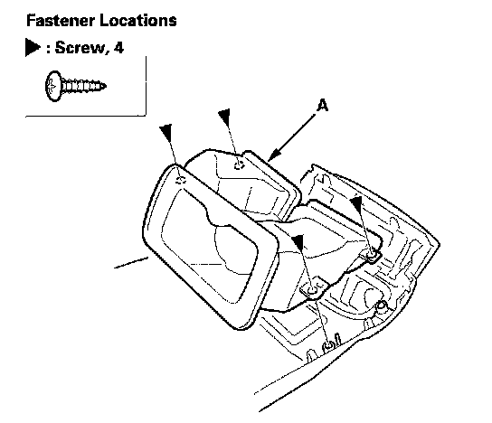
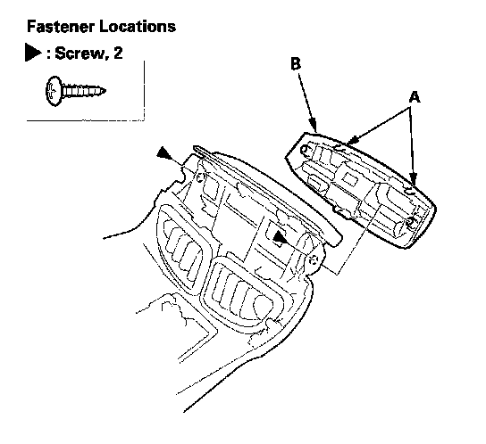
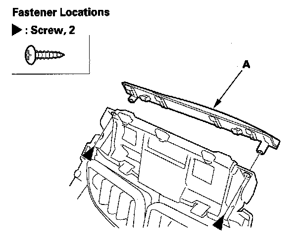
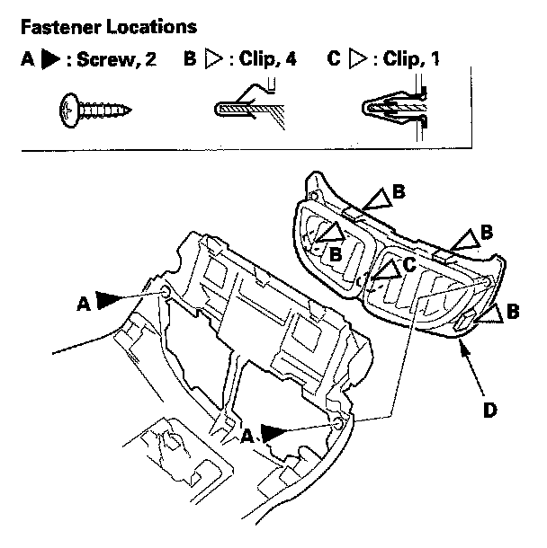
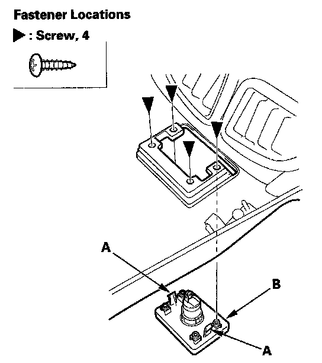

Overhaul
Center Console Rear Trim Disassembly/ReassemblySpecial Tools Required
KTC trim tool set SOJATP2014 *
* Available through the American Honda Tool and Equipment Program
NOTE:
- Use the appropriate tool from the KTC trim tool set to avoid damage when removing components.
- Take care not to scratch the trim.
1. Remove the center console rear trim

2. Remove the screws, then remove the center console duct (A).

3. Remove the screws and release the hooks (A), then remove the HVAC trim (B).

4. Remove the screws, then remove the rear upper lid (A).

5. Remove the screws (A) and detach the clips (B, C), then remove the rear console vent/vent trim (D).

6. Remove the screws, then remove the rear console vent (A) from the rear console vent trim (B).

7. Without rear entertainment system: Remove the screws and release the hooks (A), then remove the accessory power socket panel (B).
8. Reassemble the rear trim in the reverse order of disassembly, and note these items:
- If the clips are damaged or stress-whitened, replace them with new ones.
- Push the clips into place securely.